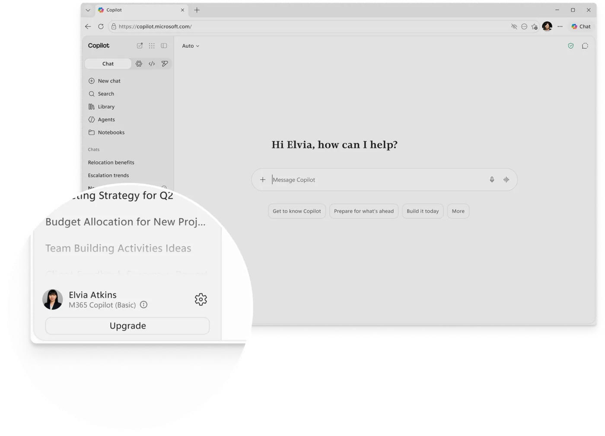
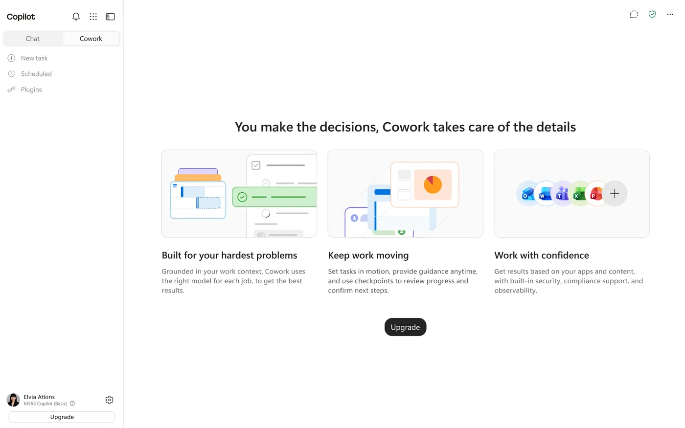
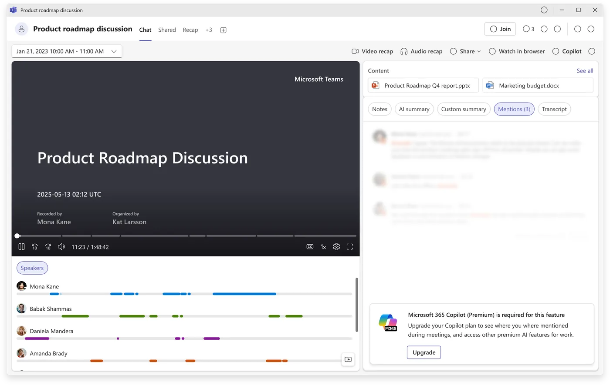
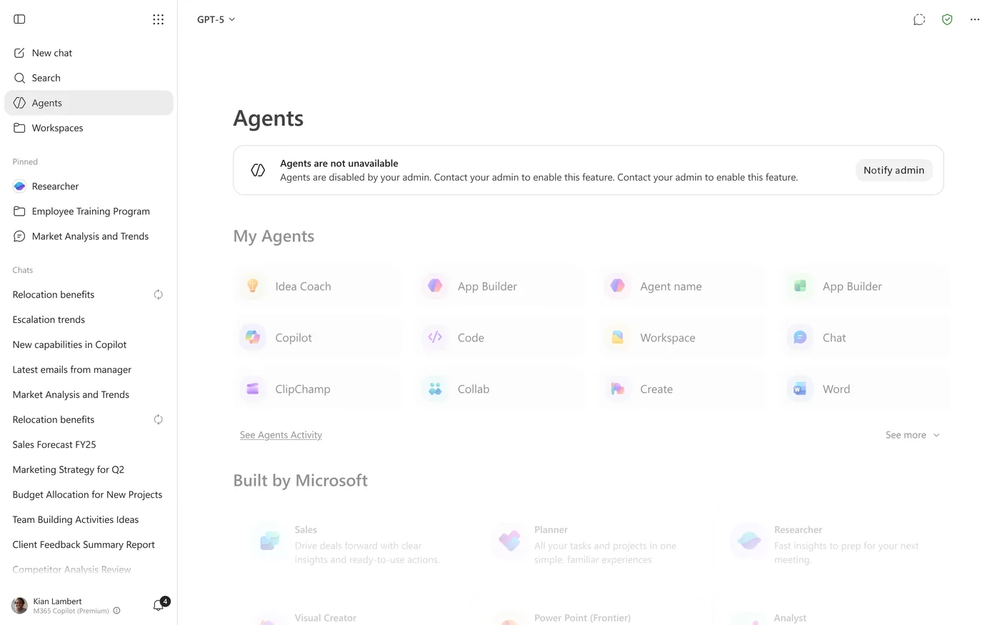
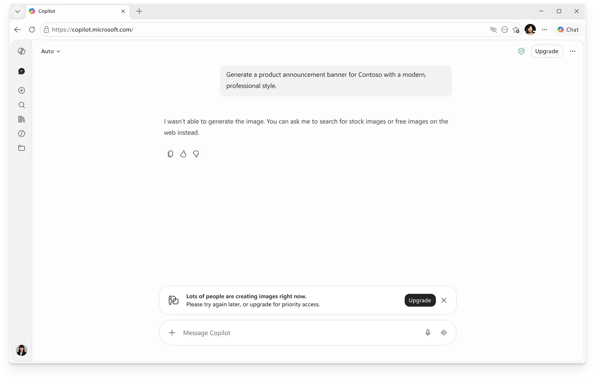
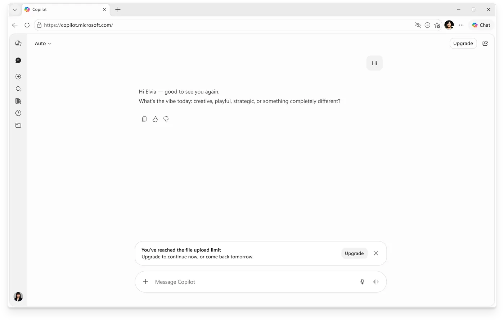
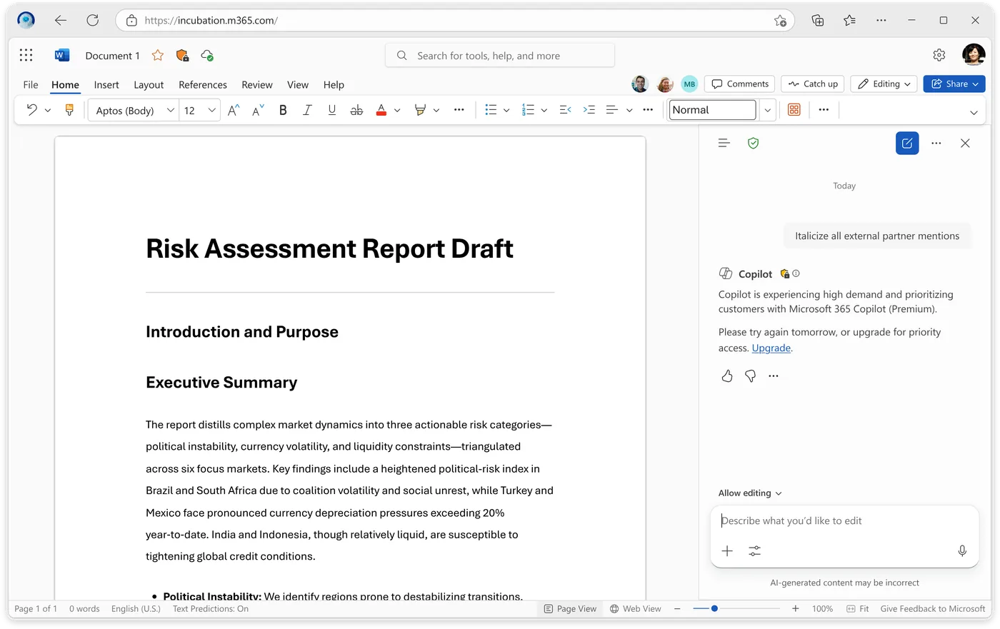
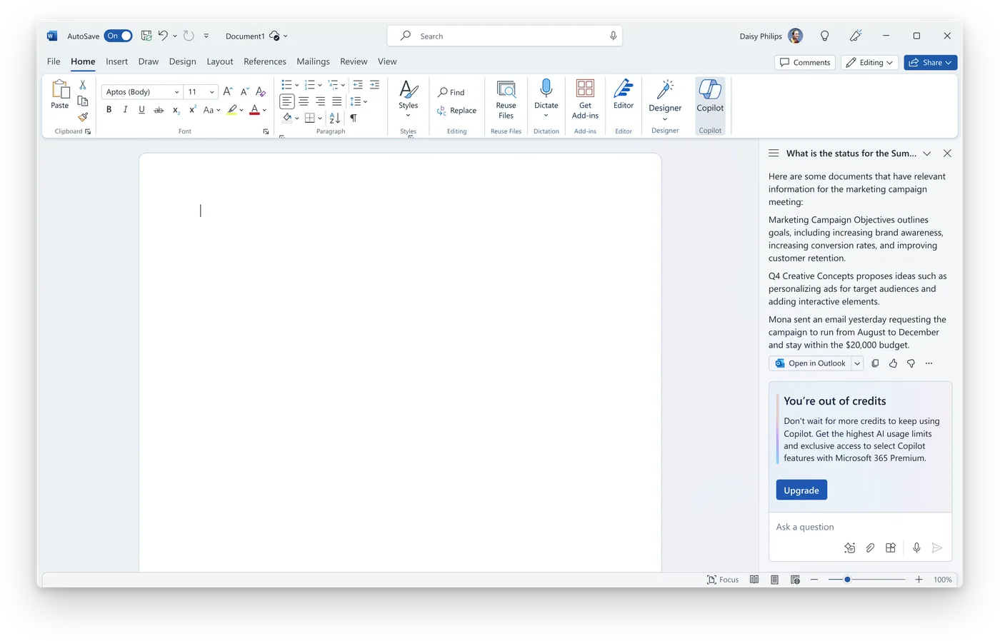
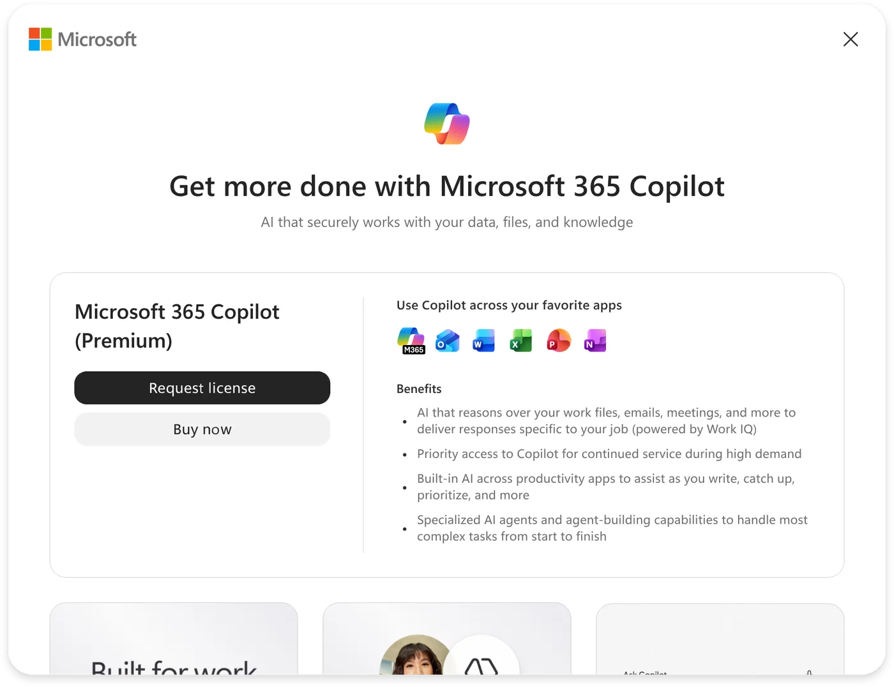
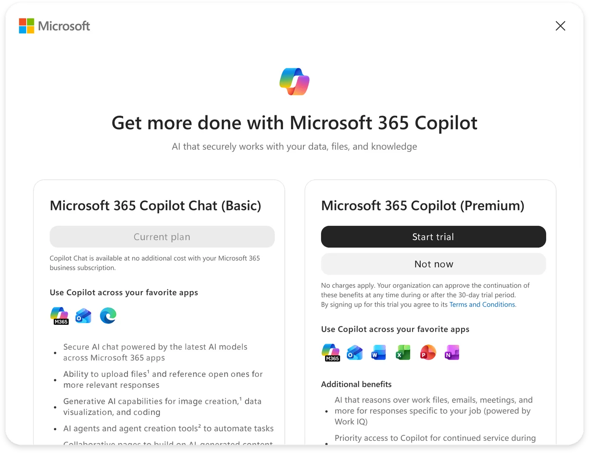

Overview
As Copilot spread across Microsoft 365, Teams, Edge, and mobile, the upgrade prompts fell apart. They were inconsistent and rarely matched what someone was trying to do. I helped build one system for how millions of people find and get access to premium Copilot, whether they buy it, start a trial, request a license, or get assigned one by an admin. The goal was to make monetization part of the product instead of a layer bolted on top.
The challenge
Premium grew up one entry point at a time, scattered across the surfaces. Inconsistent patterns and unclear value made upgrading confusing, and hard to scale.
Research found the root cause. People couldn't tell what premium offered, or why it mattered.
My role
Because the work spanned every surface, it was as much about alignment as design. I partnered across product, engineering, growth, research, content, and accessibility to pull scattered experiences into one system.
Reframing the problem
It would have been easy to design better upgrade screens. But isolated prompts were what fragmented the experience in the first place. The real question wasn't the screen, it was the system around it.
“How might we surface premium value at the exact moment a user needs it?”
That reframe moved us from generic paywalls to contextual value moments, with premium as the answer to what someone was already trying to do.
What research told us
Four patterns kept showing up, and each one shaped the system.
Users wanted clarity before commitment
People wanted to see what they'd gain before committing. A clear comparison beat a simple prompt.
Context beat promotion
Contextual moments far outperformed generic entry points. Growth data named them the single strongest conversion driver.
Enterprise users needed a justification, not a button
Many enterprise users couldn't just click “upgrade.” They needed enough to justify a license request to a manager.
Friction lived everywhere
SKU choices, approval workflows, and too many options drove dropoff, often after intent was already there.
Three principles that guided the work
- Context over promotion: connect premium to intent, not to ad space.
- Upgrades are a system: requests, trials, purchases, and admin assignment are one journey, not four screens.
- Simplify the decision: make plan differences and the why obvious, not just the what.
A system of upgrade patterns and paths
Instead of one-size-fits-all prompts, I designed the upgrade experience as a system: three reusable patterns, each matched to a different reason someone might upgrade, plus one acquisition framework that connected the paths to convert. Every surface got a consistent, intent-aware vocabulary instead of bespoke screens.
1 · Persistent upsells
Always-available entry points, used when awareness was the main gap.
- Painted Doors
- Navigation entry points
- Persistent buttons
- License indicators


2 · Contextual upsells
Triggered by what the user was actively trying to do.
- Teams Intelligent Recap
- Agent Store
- Image Generation
Rather than sell a subscription, we surfaced the exact capability they reached for.



3 · Constraint-based upsells
Triggered at a limit.
- File limits
- Copilot throttling
- Credit depletion
- Usage restrictions
The hard part was tone. These moments had to feel informative and fair, never punitive.



4 · One acquisition framework, many paths
The same thinking applied to how people got access. The system had to support several entitlement models at once:
- License request
- Low-friction trial
- Self-serve purchase
Rather than design each in isolation, I treated them as connected pathways in one framework, so a user or admin could move between them without hitting a wall.


Impact
More than any single number, the work changed how the team thought, from designing paywalls to designing value-discovery experiences.
What I learned
The biggest lesson: monetization works best as part of the product, not a layer on top. People accept an upgrade tied to a goal they're already chasing, and they resist a generic pitch that interrupts them. Designing for that difference, across every surface, turned disconnected prompts into a growth engine.